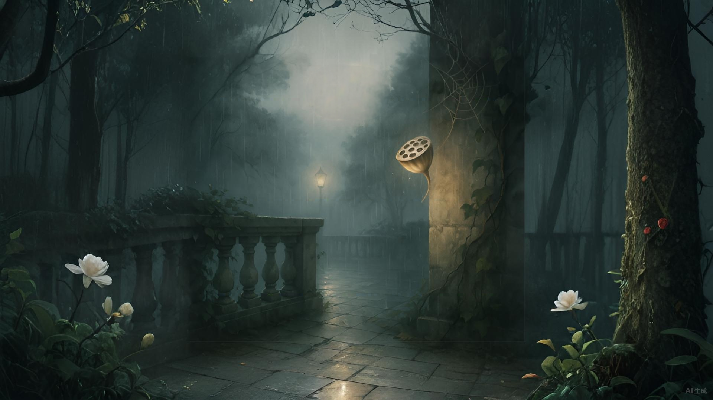

《露台》
你的游弋的眼神，
泛上了白色的石墙，
朝幽暗的一角，嗅寻
吸附生命的翅膀。
仿佛，掠檐下
随风吹展焦心的莲瓤。
悄然坠地----
是你那个丢弃了的梦！
而春.....
却也无知你梦想里的放纵！
雨后隔院，
守侯着你着恼的一声
叹息.....
用戒心营造的宫殿，
隐约随处嗜睡的处女；
温柔薤露的凉风，
仍是你凄凉中牵挂...
当赤燥的春光，，
依旧是那般举步，
蜘蛛正不做声地
落在了脸上.....
秋天的落叶，
追到树梢的沉默，
弭患的街边
蜂起猛啸......
骄傲的影子，嗅寻
吸附生命的翅膀
闪烁着灯光中，依旧
吹展你焦心的莲瓤....
2009.5.7
Beam的《露台》如同一场静谧的梦游。诗以细腻的物象——游弋的眼神、白色石墙、焦心的莲瓤、蛛网、落叶与灯光，勾勒出灵魂在雨后露台上的漫游。雨后的空气带着黯淡和清新，莲瓤、宫殿、处女、薤露与蜘蛛等意象交错在一起，构建起一个封闭而敏感的自我世界。
诗的节奏缓慢而深长，情绪游移于孤独、守望、放纵和自我审视之间。每一个自然细节都像情绪的投影，莲瓤是内心的焦虑与渴望，宫殿象征自我防御，凉风与秋叶映衬着不可言说的凄凉。最终，“骄傲的影子”与“吸附生命的翅膀”反复回响，成为全诗最灵魂的呼吸。
在这幅诗画合一的意境中，露台既是现实的空间，也是灵魂独舞的舞台。每一次回望，都能从光与暗、湿润与燥热、梦与清醒的缝隙里，读到Beam最独特的敏感与力量。